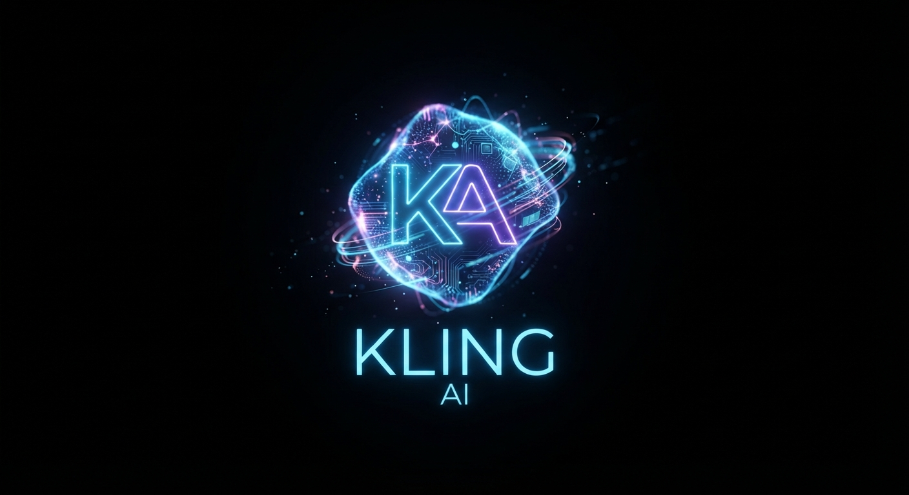
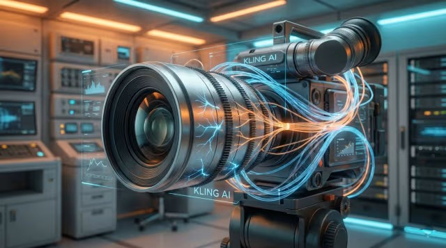
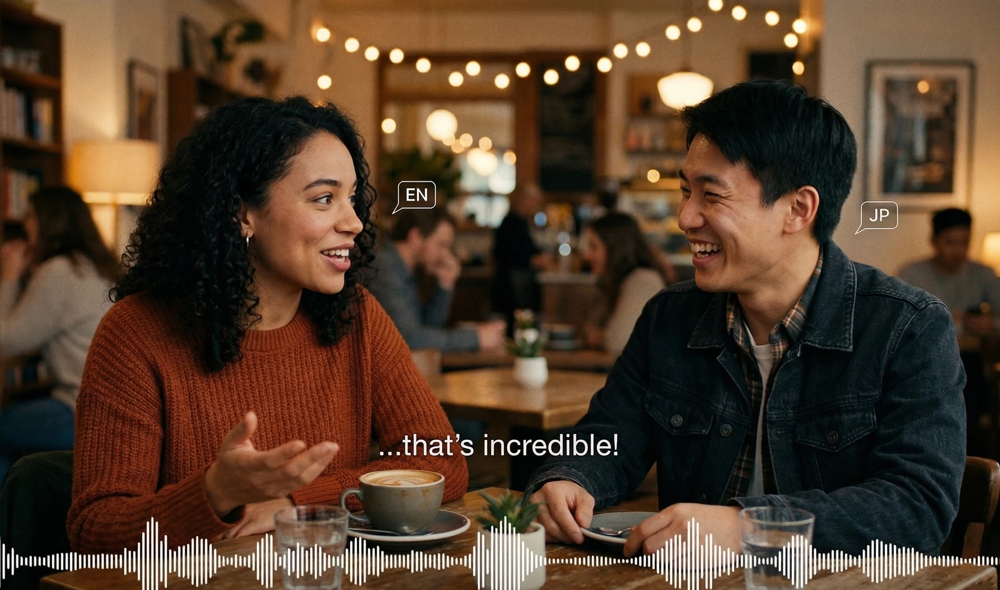
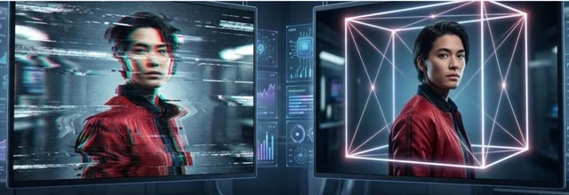
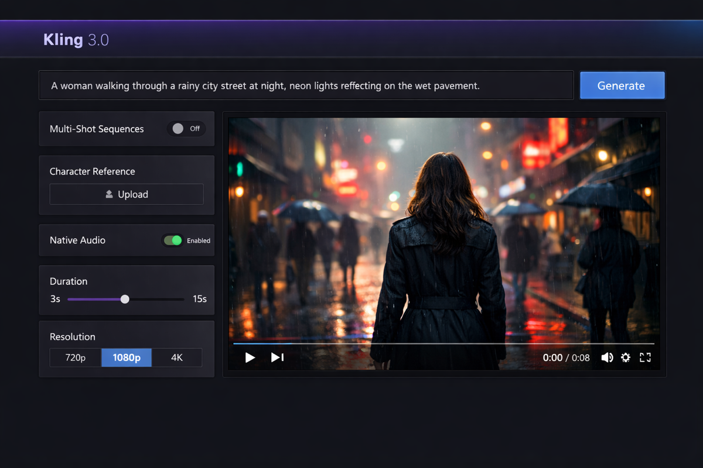

Permite crear secuencias continuas y fluidas de hasta 15 segundos, logrando arcos narrativos más complejos sin cortes fragmentados.

Incorpora la generación simultánea de efectos de sonido inmersivos y voces con sincronización labial precisa en múltiples idiomas, eliminando la necesidad de herramientas externas.

Cuenta con un sistema avanzado de bloqueo de identidad y referencias múltiples (imagen, vídeo o elementos personalizados) que evita la distorsión o "efecto morphing" de los personajes al moverse.

Es capaz de interpretar guiones gráficos o descripciones para componer automáticamente planos múltiples, cambios de ángulo y transiciones complejas en una sola generación.Es capaz de interpretar guiones gráficos o descripciones para componer automáticamente planos múltiples, cambios de ángulo y transiciones complejas en una sola generación.
Soporte nativo para salidas en ultra alta definición (2K y 4K), optimizado para estándares de producción audiovisual.